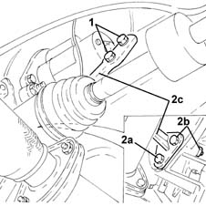
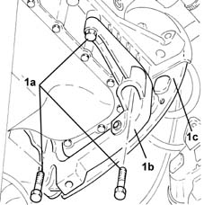
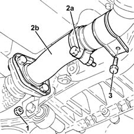
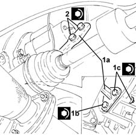
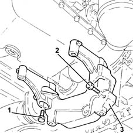
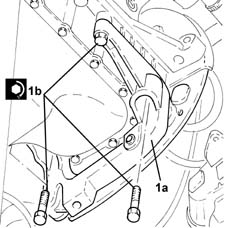
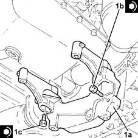

2110A60 manual gearbox/engine coupling bracket - r+r
- Path
- Procedures > 21 GEARBOX > 2110 MANUAL GEARBOX AND DIFFERENTIAL > 2110A manual gearbox and differential assembly > 2110A60 manual gearbox/engine coupling bracket - r+r
- Kind
- repair procedure (removal / refitting; the operation number is the code)
- Applies to
- engines: 1.2 8v, 1.2 16v, 1.3 JTD; all production periods
- Interactive page
- https://sloeber94.github.io/elrnDB-lYpsln/en/#/2429110
Applies to: engines: 1.2 8v; all production periods
 Removing
Removing
 Refitting
RefittingPosition the vehicle on the ramp.
1. Undo the bolts securing the bracket between the manual gearbox/engine, crankcase side.
2. Undo the bolt (2a) and the bolt (2b) and remove the manual gearbox/engine bracket (2c).

Applies to: engines: 1.2 16v; all production periods
Removing
RefittingPosition the vehicle on the ramp.
Proceed with removal 4450B12 front or rear wheels (two) - r+r .
Proceed with removal 7055B66 Engine compartment DUST SHIELD protection in right front wheel arch - R.R. .
Proceed with removal 7055B91 Right front WHEEL ARCH LINER - R.R. .
Proceed with removal 7055B90 Left front WHEEL ARCH LINER - R.R. .
Proceed with removal 5530B10 battery - r+r .
Proceed with removal 5530B52 Battery DRIP TRAY/SUPPORT - R.R. .
Proceed with removal 1048A10 air cleaner filtering element - replace .
Proceed with removal 1072C44 exhaust manifold heat shield on bulkhead - r+r .
Proceed with removal 1072C16 exhaust manifold with catalytic converter - r r .
Proceed with removal 2110A10 manual gearbox and differential - r + r .
1. Undo the bolts (1a) and remove the bracket between the manual gearbox/engine (1b) complete with bottom flywheel guard (1c).

Applies to: engines: 1.3 JTD; all production periods
Removing
RefittingPosition the vehicle on the ramp.
Proceed with removal .
1. Tighten the nuts fastening the rigid section of the exhaust pipe between the catalytic converter and the silencer, silencer side.
Release the rigid pipe for the exhaust pipe between the catalytic converter and silencer from the silencer.
2. Loosen the collar (2a) and remove the rigid pipe for the exhaust pipe between the catalytic converter and the silencer (2b).
3. Undo the bolts fixing the catalytic converter mounting bracket to the manual gearbox/engine connecting bracket.

Applies to: engines: 1.2 8v; all production periods
Refitting
Removing1. Place the manual gearbox/engine bracket (1a) back in its housing and secure it to the gearbox tightening the bolt (1b) and the bolt (1c) to the recommended torque.
 | Fastening | Component | Ø | Value (daNm) |
|---|---|---|---|---|
1b | Bolt | GEARBOX/ENGINE COUPLING BRACKET | M12 | (Gearbox side) 5.0 ÷ 6.1 |
| Fastening | Component | Ø | Value (daNm) |
|---|---|---|---|---|
1c | Bolt | GEARBOX/ENGINE COUPLING BRACKET | M12 | (Gearbox side) 5.0 ÷ 6.1 |
2. Tighten the bolts fixing the manual gearbox/engine bracket, crankcase side, to the recommended torque.
| Fastening | Component | Ø | Value (daNm) |
|---|---|---|---|---|
2 | Bolt | GEARBOX/ENGINE COUPLING BRACKET | M8 | (Engine crankcase side) 2.5 ÷ 3.1 |

Applies to: engines: 1.2 16v; all production periods
At the bench, undo the bolts and detach the bracket between the manual gearbox/manual from the flywheel bottom guard.
Applies to: engines: 1.3 JTD; all production periods
1. Undo the bolts securing the bracket between the manual gearbox/engine to the gearbox.
2. Undo the bolts securing the bracket between the manual gearbox/engine to the gearbox.
3. Remove the bracket between the manual gearbox/engine.

Applies to: engines: 1.2 16v; all production periods
Refitting
RemovingAt the bench, fit the flywheel bottom guard on the bracket between the manual gearbox/engine and secure it with its bolts.
1. Refit in its seating the bracket between the manual gearbox/engine (1a) and tighten the bolts (1b) to the specified torque.
| Fastening | Component | Ø | Value (daNm) |
|---|---|---|---|---|
1b | - | - | - | - |

Applies to: engines: 1.3 JTD; all production periods
Refitting
Removing1. Refit the bracket between the manual gearbox/engine (1a) in its seating, then secure it with the bolts (1b) and (1c) to the specified torque.
| Fastening | Component | Ø | Value (daNm) |
|---|---|---|---|---|
1b | - | - | - | - |
| Fastening | Component | Ø | Value (daNm) |
|---|---|---|---|---|
1c | Bolt | GEARBOX/ENGINE COUPLING BRACKET | M8 | (Engine crankcase side) 2.7 ÷ 3.3 |

Applies to: engines: 1.2 16v; all production periods
Proceed with refitting 2110A10 manual gearbox and differential - r + r .
Proceed with refitting 1072C16 exhaust manifold with catalytic converter - r r .
Proceed with refitting 1072C44 exhaust manifold heat shield on bulkhead - r+r .
Proceed with refitting 1048A10 air cleaner filtering element - replace .
Proceed with refitting 5530B52 Battery DRIP TRAY/SUPPORT - R.R. .
Proceed with refitting 5530B10 battery - r+r .
Proceed with refitting 7055B90 Left front WHEEL ARCH LINER - R.R. .
Proceed with refitting 7055B91 Right front WHEEL ARCH LINER - R.R. .
Proceed with refitting 7055B66 Engine compartment DUST SHIELD protection in right front wheel arch - R.R. .
Proceed with refitting 4450B12 front or rear wheels (two) - r+r .
Refill the manual gearbox and differential 0010T41 MANUAL GEARBOX OIL - Check level and top up, if necessary .
Remove the car from the ramps.
Applies to: engines: 1.3 JTD; all production periods
Tighten the bolts fixing the catalytic converter mounting bracket to the manual gearbox/engine connecting bracket.
Refit the rigid exhaust pipe section between the catalytic converter and the silencer and secure it using the collar.
Tighten the nuts fastening the rigid section of the exhaust pipe between the catalytic converter and the silencer, silencer side.
Proceed with refitting .
Remove the car from the ramps.
Topics linked from this page (11)
- 0010T41 MANUAL GEARBOX OIL - Check level and top up, if necessary
- 1048A10 air cleaner filtering element - replace
- 1072C16 exhaust manifold with catalytic converter - r r
- 1072C44 exhaust manifold heat shield on bulkhead - r+r
- 2110A10 manual gearbox and differential - r + r
- 4450B12 front or rear wheels (two) - r+r
- 5530B10 battery - r+r
- 5530B52 Battery DRIP TRAY/SUPPORT - R.R.
- 7055B66 Engine compartment DUST SHIELD protection in right front wheel arch - R.R.
- 7055B90 Left front WHEEL ARCH LINER - R.R.
- 7055B91 Right front WHEEL ARCH LINER - R.R.
Topics that link to this page (11)
- 1020A20 crank case oil sump - r + r clean seals for sealant application
- 1020B10 cover of timing system with chain drive - r + r replace oil seal and gasket
- 1020D14 front crank shaft oil seal cover - r + r and replace seals for versions with oil pump on crank shaft, timing side
- 1028H20 piston with connecting rod - r r
- 1032A12 CHAIN AND GEARS for timing system - R.R. for timing or Replacement.
- 1032B46 toothed drive pulley - r + r
- 1032B60 bolt pulley - r r
- 1032C40 Timing CHAIN TENSIONER PLATE - R.R.
- 1084B12 engine oil pump - r+r
- 1084B26 emgine oil intake duct - r r
- 1084B45 RIGID air supply PIPE between air-air heat exchanger and intermediate hose - R.R.